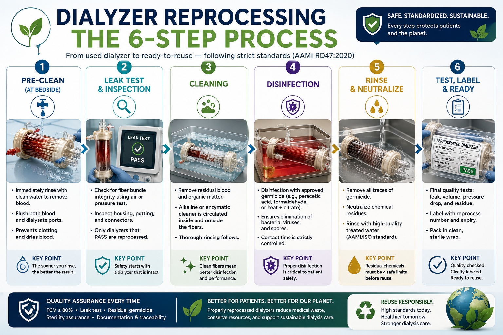
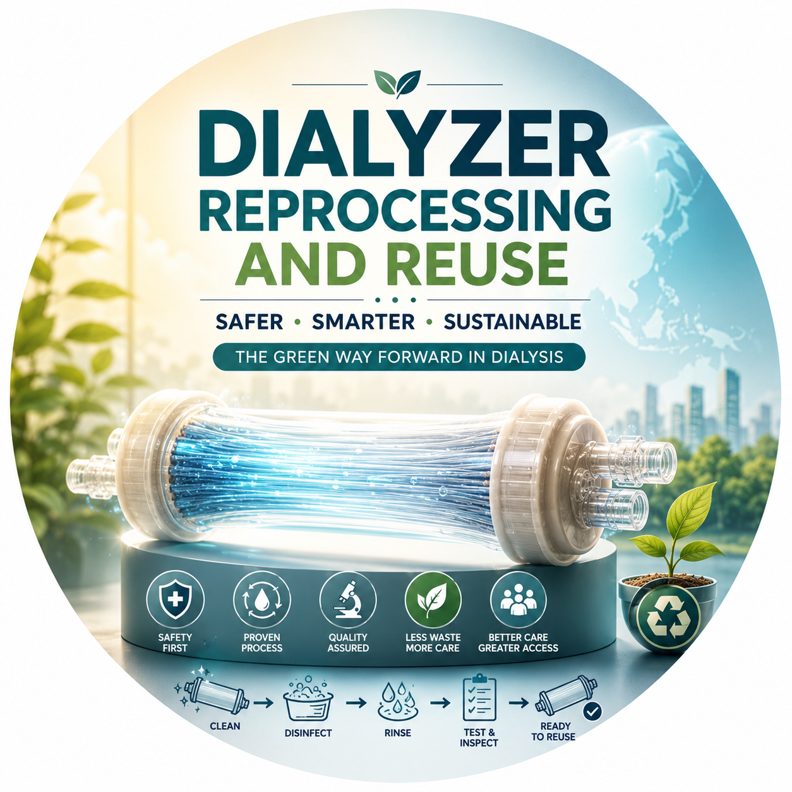
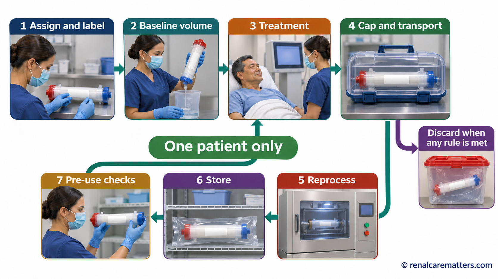
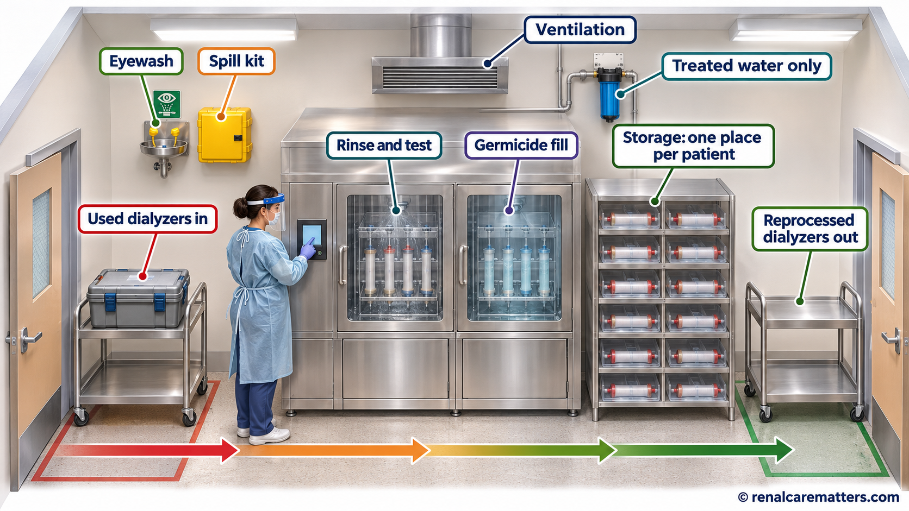
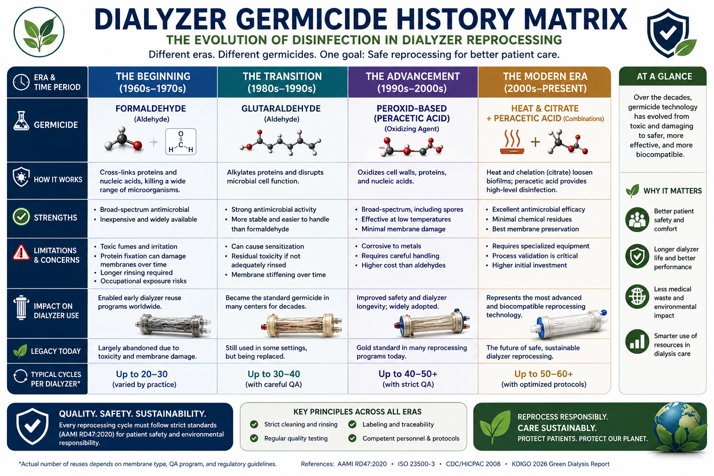
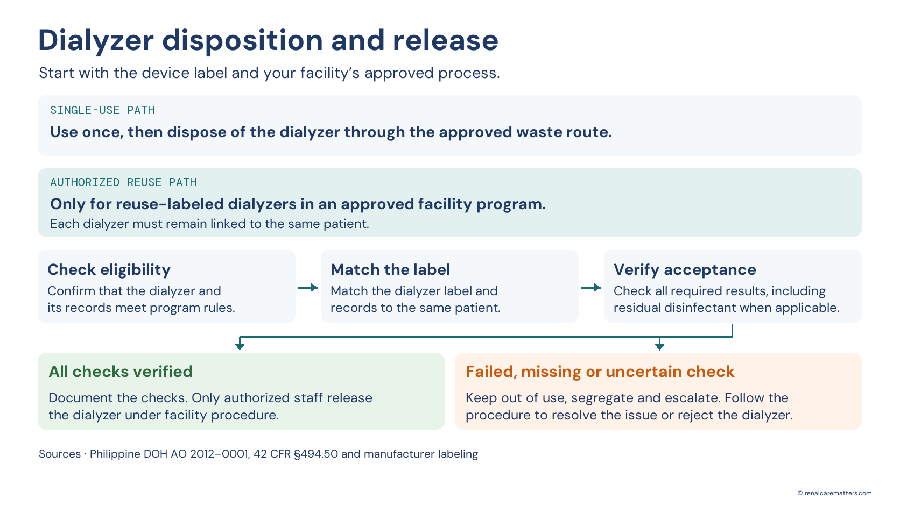
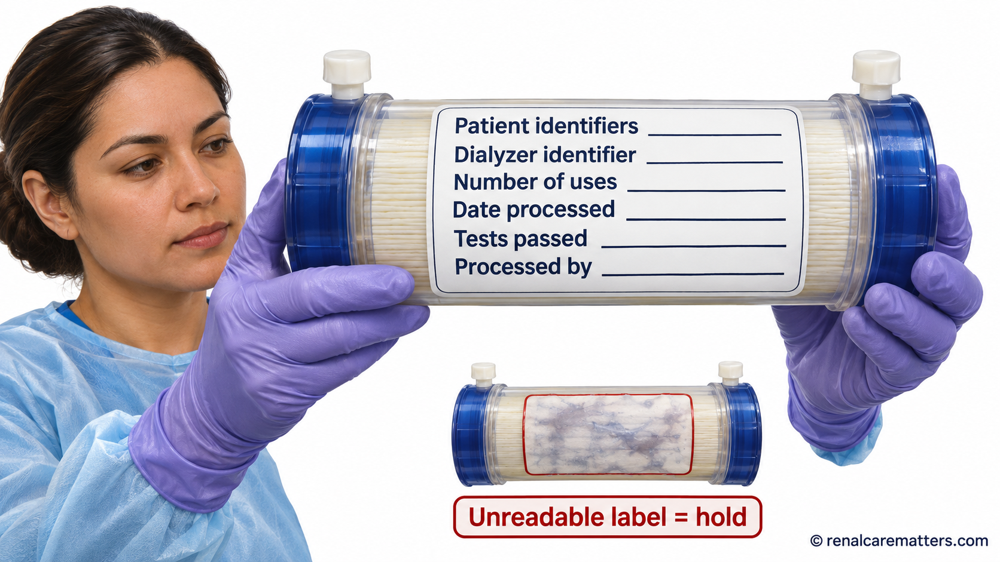
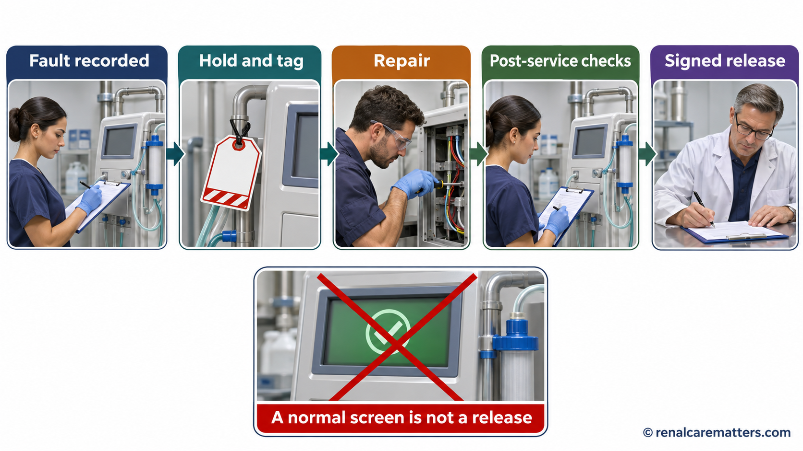

The life of a reprocessed dialyzer; manual, semi-automated, and automated reprocessing step by step; total cell volume and leak tests; germicide checks before use; and the records that make a dialyzer traceable.
PublishedNailathalaGipatikPepalwal:ReferencesMga SanggunianMga TinubdanReng Reperensya:9Audience: Entry-level dialysis technicians and trainees · preceptors, head nurses, and training providersRead timeOras ng pagbasaOras sa pagbasaOras ning pamamasa:
This module is study material for dialysis technicians. It explains why safe practice works the way it does. It does not replace the physician’s orders, the supervising nurse’s direction, your unit’s approved procedures, or the manufacturer’s instructions for use. What a technician may do differs between countries and between facilities, so do only the tasks you are trained, assigned, and signed off to do. Every case is fictional.
Learning objectives
After this module you should be able to
Tell single use apart from reuse within an authorized, validated dialyzer program.
Check and record the information that links an eligible dialyzer to the same patient, and confirm that it is ready.
Hold, reject, or escalate a device or record discrepancy through the designated procedure.
Describe the routine equipment quality checks, and tell the completion of maintenance apart from authorized return to service.
Classroom 4 hSkills lab 4 hSupervised placement 12 h
Pre-testBefore you read, answer the 5 self-assessment questions and note your score. After the module, select New set of questions and compare. The difference is what you learned; the questions you still miss are what to reread.
Start here
The big picture, in plain words
In plain wordsPicture a household with twins that washes and reuses their feeding bottles. Reuse is safe only when each bottle is cleaned, rinsed free of soap, and handed back to the right child. Some dialysis units do the same with a dialyzer: they clean, test, and disinfect it so that the same patient can use it again. This is called reprocessing or reuse.
The picture has a limit. A mix-up of feeding bottles between twins is a small matter. A mistake in reprocessing can give a patient someone else’s dialyzer, a clotted dialyzer, or a dose of disinfectant. Reuse is safe only when every step is done and recorded. The rule that runs through this module: if you cannot prove it, do not use it.

Figure 1. The reprocessing chain. Each step leaves a record, and a dialyzer with a missing record is not used.
Figure 2 · Key terms for this module
Single useA dialyzer that is used once and discarded.
ReprocessingCleaning, testing, and disinfecting a dialyzer for the same patient’s next treatment.
Total cell volumeThe fluid volume of the fiber bundle. It falls as fibers clot, so it shows whether the dialyzer still cleans well.
GermicideThe chemical that kills microbes inside the stored dialyzer.
Residual testA test before use that proves the germicide has been rinsed out.
TraceabilityBeing able to follow one dialyzer through every step, by its label and its records.
Opening case · fictional
Case: A passed check with an unreadable label
It is Saturday, just before the first shift. Ms. Joy Navarro, 23, a trainee technician, goes to the designated storage area to collect a dialyzer from the unit’s authorized reuse program. The reprocessing log shows that device D-071 passed its previous processing checks. On the device label, one patient identifier cannot be read, and the other does not match the patient due this morning. The device is still in storage. The next shift is about to begin.
Before reading on, decide:
Which finding decides whether this device can be used?
What should Ms. Navarro do with the device, and what should she record?
If the unit assigns a replacement, which checks still apply to it?
Keep your answers in mind. The lesson gives you what you need, and the case review near the end shows one sound response.
Lesson · part 1
Single use and same-patient reuse

Figure 3. A reprocessed dialyzer belongs to one patient only. The label is what proves whose it is.
Think of a balikbayan box shipped home from abroad. However well it was packed, it reaches the right family only if the name and address on the label stay readable all the way. A box with a smudged label is held at the depot until someone proves whose it is. The picture has a limit. A misdelivered box is an inconvenience. A reused dialyzer belongs to one patient only, so in a reuse program the label is a safety check, not a convenience.
A single-use dialyzer is used for one treatment and then handled under the facility’s contaminated waste procedure. An authorized reuse program uses an eligible dialyzer on the same patient over several treatments, under a validated reprocessing program. Product labeling, the instructions for use (IFU), the applicable rules, and the facility’s written procedure decide whether a particular device may enter that program. Keep this workflow separate from routine station turnover.1,2
An authorized program controls cleaning and disinfection, water quality, device performance, identity, storage, records, and the checks made before use. It also states who may perform each check and who may make a release decision. For international comparison, U.S. requirements under 42 CFR § 494.50 call for same-patient use and labeling for multiple reuse, among other controls. In Philippine practice, apply the local facility’s approved procedure and requirements. If your placement uses only single-use dialyzers, you can learn this module through a traceability and disposition simulation.3,4
Lesson · in practice
The life of a reprocessed dialyzer
Think of a reused dialyzer the way a family thinks of a toothbrush: it belongs to one person, it is cleaned after every use, and it is thrown away when it wears out. A reused dialyzer belongs to one patient from its first treatment to the day it is discarded. Each use is one turn of the same cycle.

Figure 4. The life of a reprocessed dialyzer. Loop of eight steps in the life of a reprocessed dialyzer, with an exit to discard.
Figure 5 · One dialyzer, from first use to discard
Assign and labelBefore first use: the patient’s full name and a second identifier, the dialyzer type, and the date. A warning mark if another patient has a similar name.
BaselineThe original total cell volume is measured and recorded before the first treatment.
TreatmentThe use number is recorded.
Rinse-back and transportAfter treatment the ports are capped, and the dialyzer goes promptly to the reprocessing room in a clean covered container.
ReprocessRinse and clean, test, fill with germicide, inspect, label.
StoreIn the patient’s own place, for at least the minimum contact time.
DiscardWhen any rejection rule is met. Recorded with the reason.
Question
Usual rule
Which dialyzers may be reprocessed?
Only those the manufacturer labels for multiple use, and only where the medical director’s policy and the patient’s consent allow it5,6
Which patients’ dialyzers are not reprocessed?
Those of patients with hepatitis B. Other exclusions, such as an active bloodstream infection, are set by the unit’s policy and the physician7
How soon must reprocessing start?
Within the time your procedure sets. If it will be delayed, the dialyzer is refrigerated as the procedure states, not left on a counter
How many times may it be reused?
Until it fails a test or reaches the unit’s maximum number, whichever comes first
Can it ever be used for another patient?
Never
Discard the dialyzer when
Because
Total cell volume is below 80 percent of its original value
Too many fibers are blocked for the patient to receive the prescribed treatment
It fails the pressure leak test
A torn fiber lets blood and dialysate mix
It has reached the maximum number of uses
Unit policy
The label is missing, unreadable, or does not match
Its identity cannot be proved
The casing, header, or a port is cracked, or a cap is missing
Leaks and contamination
Many dark, clotted fibers, or clots in the header, remain after cleaning
Poor performance and a risk of reactions
Germicide is absent or too weak when tested before use
The dialyzer may not have stayed disinfected
It has been stored longer than the germicide’s allowed storage time
Germicide strength falls with time
The patient had an unexplained reaction during its last use
The dialyzer is held and reported until the cause is known
RememberDiscarding a doubtful dialyzer costs the price of one dialyzer. Using it can cost far more. Nobody should be criticized for discarding.
Lesson · in practice
Four steps every method must complete
Whether the work is done by hand or by a machine, the same four things must happen, in the same order.5 The order matters for a physical reason: germicide cannot reach a surface still coated with blood, and a test is meaningless on a dialyzer that has not been cleaned.
Step
What is done
What it achieves
What goes wrong
1. Rinse and clean
The blood side is flushed with treated water. Water is also pushed backward across the membrane from the dialysate side to lift clots out of the fibers. A cleaning agent may be used if the procedure allows it
Removes blood and protein so that the germicide can reach every surface
Too much pressure tears fibers; delay lets blood dry and set; the wrong cleaning agent damages the membrane
2. Test
Total cell volume is measured and compared with the original. A pressure test checks for leaks
Shows that the dialyzer still cleans well and is intact
Equipment not calibrated; comparison with the wrong baseline; recording a result that was not actually measured
3. Fill with germicide
Both the blood side and the dialysate side are filled completely with germicide at the correct strength, and all four ports are closed with disinfected caps
Kills microbes during storage
Air pockets leave surfaces untouched; wrong dilution; expired germicide; a cap left loose
4. Inspect, label, store
The outside is wiped with disinfectant. The dialyzer is held up to the light and looked at. The label is completed. It is stored in the patient’s place
Makes the dialyzer traceable and keeps it for the contact time
Label filled in later from memory; dialyzers with similar names stored side by side
Total cell volume in plain terms. It is the volume of fluid the fibers hold, like the number of glasses of water a pitcher can take. A new dialyzer might hold 110 milliliters. If clots block one fifth of the fibers, it holds about 88 milliliters, which is 80 percent of the original, and it is at the limit.
Percent of original = current total cell volume ÷ original total cell volume × 100. Example: original 115 mL, today 101 mL. 101 ÷ 115 × 100 = 88 percent. Pass. Example: original 115 mL, today 90 mL. 90 ÷ 115 × 100 = 78 percent. Discard.
Contact time. A germicide needs time to work, the way rice needs time on the fire however hot the stove. For peracetic acid germicides the commonly stated minimum is 11 hours; other germicides differ. Use the time on the product’s instructions and in your procedure. A dialyzer reprocessed after the evening shift may not be ready for an early morning treatment, so check the time on the label, not only the date.
Lesson · in practice
Manual, semi-automated, and automated reprocessing
In plain wordsThink of washing clothes. Some households wash everything by hand in a batya. Some use a twin-tub machine that washes and spins, while a person moves the clothes from tub to tub. Some use a fully automatic machine that runs the whole cycle on its own. Dialyzer reprocessing comes in the same three forms. In manual reprocessing a person does every step with simple equipment. In semi-automated reprocessing a device does some steps, usually rinsing and filling, and a person does the rest. In automated reprocessing a machine does the rinse, the tests, and the germicide fill in one program and records the results.
The picture has a limit. No washing machine checks whose shirt it is washing, and neither does a reprocessing machine. In all three methods a person still checks identity, connects the dialyzer, caps it, inspects it, and signs.
Manual
Semi-automated
Automated
Rinse and clean
By hand, at a rinse station with a pressure gauge
By the device, on a timer
By the machine, with controlled pressure and flow
Total cell volume
Measured by hand: the fluid in the fibers is pushed out with air into a measuring cylinder
Often by hand
Measured by the machine and compared with the stored baseline
Leak test
By hand: pressure is applied and the gauge is watched for a fall
By hand or by the device
By the machine
Germicide dilution and fill
Diluted by hand; strength confirmed for each batch; filled by hand
Diluted and filled by the device
Diluted and filled by the machine
Record
Written by hand
Written by hand
Printed or stored by the machine, then checked and signed
Main strengths
Low equipment cost; works during a machine breakdown
More consistent rinsing and filling
Most consistent; less staff contact with germicide; automatic record
Main risks
Depends entirely on the person; a step is easiest to skip or mis-measure
Steps done by hand between device steps can be missed
False confidence; a machine out of calibration fails every dialyzer in the same way
Figure 6 · Manual reprocessing, step by step
PrepareProtective equipment on. Check the water pressure, the germicide batch, and the patient’s record.
Confirm identityRead the label against the record before you begin.
Rinse the blood sideTreated water through the fibers until the outflow runs clear.
Reverse rinseWater from the dialysate side across the membrane, within the pressure limit in the procedure, to lift clots.
Clean the headersOnly by the method your procedure allows.
Measure total cell volumePush the fluid out of the fibers with air into a measuring cylinder. Read it at eye level. Calculate the percent of original.
Leak testApply the stated pressure and watch the gauge for the stated time.
Fill with germicideBoth sides, no air pockets. Fresh disinfected caps on all four ports.
Wipe, inspect, labelThe result, the use number, the date and time, and your name.
StoreIn the patient’s place. Record the earliest time it can be used.
Figure 7 · Semi-automated reprocessing
Start-of-day checksDevice rinsed, germicide supply connected and in date, strength of the diluted germicide confirmed.
Confirm identity and connectOne dialyzer, one patient, one position.
Device cycleThe rinse, cleaning, and germicide fill run on the device.
Hand stepsTotal cell volume and the leak test, where the device does not do them. This is the step most often forgotten.
Check the fillNo air; germicide present at the outlet.
Cap, wipe, inspect, label, storeAs for manual.
Between dialyzersThe device’s own rinse or disinfection step, as its manual states.
Figure 8 · Automated reprocessing
Start-of-day checksMachine disinfected. Calibration check of volume and pressure with the reference the manufacturer supplies. Germicide connected and in date.
Confirm identityEnter or scan the patient and the dialyzer. The baseline on the screen must be this dialyzer’s own.
ConnectAll four connections firm and in the right positions.
Run the programDo not interrupt it.
Read the resultPass or fail, the measured volume, the leak test. A fail is a fail; do not rerun until it passes.
Remove and capDisinfected caps on all four ports.
Wipe, inspect, labelAttach or copy the machine’s record. Sign.
StoreIn the patient’s place.
Problem
Likely cause
What to do
Every dialyzer fails the volume test this morning
The machine or measuring equipment is out of calibration; low water pressure
Stop. Repeat the calibration check. Call the biomedical technician. Do not discard a whole shift’s dialyzers on a faulty reading, and do not pass them on one either
Every dialyzer passes, month after month, with no discards
Tests are not being done or not being recorded honestly; equipment reading high
Tell the supervisor. Some failures are expected
Volume falls sharply for one patient
Clotting during treatment; delayed reprocessing
Discard if below 80 percent. Tell the nurse: the patient’s anticoagulation may need review
Germicide test weak at the start of a batch
Wrong dilution; old concentrate; water flow fault
Do not use the batch. Remake and retest it. Dialyzers already filled from it are reprocessed again
Air pocket seen in a stored dialyzer
Incomplete fill; loose cap
Reprocess again or discard, by procedure
Leak test fails after a strong reverse rinse
Pressure high enough to tear fibers
Discard. Check and correct the rinse pressure
Two dialyzers with similar names on one rack
How storage is arranged
Separate them and add name-alert labels to both
Stop and reportNo method checks identity for you. An automated machine will reprocess the wrong dialyzer perfectly. Read the label against the record at the start, and again before storage.
Lesson · in practice
The reprocessing room and your own safety
Germicides are chosen because they destroy living cells. They do the same to your eyes, skin, and lungs, without telling the difference. Used dialyzers also carry blood. The room is arranged, and you are dressed, with both hazards in mind.

Figure 9. Reprocessing room: dirty in, clean out. Plan of a reprocessing room with one-way flow from used dialyzers to labeled storage, with eyewash, spill kit, and ventilation.
Requirement
What it looks like
Protective equipment
A fluid-resistant gown or apron, gloves suited to the germicide, and eye and face protection whenever you handle used dialyzers or germicide
Ventilation
Working exhaust; no strong smell of germicide. A smell that makes your eyes water is reported, not tolerated
Eyewash and spill kit
Present and in date, and you know where they are and how to use them
Safety data sheets
One for each chemical, kept in the room
Clean and dirty flow
Used dialyzers come in on one side; reprocessed dialyzers leave by another. They never share a counter
Water
Treated water that meets the standard for dialysis water. Tap water is never used on a dialyzer8
Storage
One labeled place per patient, away from heat and sunlight, with similar names kept apart
Germicide stock
In the original containers, in date, stored as the label states; opened containers dated
Equipment checks
Gauges, measuring cylinders, and reprocessing machines checked and calibrated on schedule, with records
Waste
Discarded dialyzers go into infectious waste (Module 5)

Figure 10. Germicides used in reprocessing. Whatever the chemical, two checks matter: that it was present during storage, and that it is rinsed out before use.
Figure 11 · Germicide in the eyes or on the skin
FlushEyes at the eyewash, skin under running water, for the time on the safety data sheet. Start within seconds.
RemoveTake off contaminated clothing.
TellThe nurse in charge, at once.
Get assessedAs the safety data sheet and unit policy direct.
ReportFile an incident report, so that the cause is corrected.
Lesson · part 2
Verify a traceable chain of records
Traceability means you can link the device to the correct patient, to its previous uses and processing history, to its current status, and to the staff who checked it. Compare the device label with the approved identifiers in the current patient record and with the matching processing log. Confirm that the use count and every required check are recorded. Two traps are common. A device with a readable label may still be missing a required check. A complete check record may belong to a different device.

Figure 12. Traceability and disposition. The following table provides a text equivalent.
Verification area
What the approved record should let assigned staff confirm
Identity and eligibility
A patient match using approved identifiers, the device identifier or an equivalent traceable record, an eligible model, and confirmation that the dialyzer belongs to this same patient.
Processing and storage
The processing date or batch, the use count, who performed the checks, and whether the storage and readiness status meet facility rules.
Device condition and performance
The required visual, integrity, and performance checks. Total cell volume (TCV), where it is used, helps show whether the fibers are still open. The approved protocol sets the acceptance limits.
Disinfectant safeguards
A documented check of the chemical process, and a required residual disinfectant check before use where it applies. The residual check looks for chemical left behind after preparation.
Disposition
The current status, the reason for any hold or rejection, the designated reviewer, the approved replacement or disposal, and any authorized clearance.
The test methods, chemical concentrations and limits, storage conditions, required exposure times, and maximum number of uses depend on the validated system and the requirements that apply. Practice finding each of them in the written procedure with your preceptor. Check each requirement on its own. A good result in one area does not clear a problem in another.2,1
All information below is fictional. The incomplete fields are there on purpose.
Field
Mock entry
Current patient record
Training patient TR-204. Two facility-approved identifiers are in the exercise chart.
Device
D-071. Labeled for multiple use in this scenario.
Patient identifiers on label
One cannot be read. The other does not match the current patient.
Previous processing checks
Recorded as passed for D-071.
Prior use count
Three recorded uses. Compare with the local approved limit once identity and the other criteria are verified.
Pre-use residual check
Pending.
Current disposition
Held from use. Nurse and quality lead told. Designated review pending.
What to do and record. Tell the supervising nurse and the designated reprocessing or quality lead, and say exactly which identifiers failed. Do not guess the patient match from the schedule, and do not rebuild a label from memory. The authorized lead decides whether the identity can be verified and what happens to the device.
If a replacement is assigned. It must match the current order and pass the applicable preparation and checks before use, exactly as if the first device had never existed.2
Figure 13. Germicides used in reprocessing. Whatever the chemical, two checks matter: that it was present during storage, and that it is rinsed out before use.

Figure 14. What a dialyzer label must tell you. Reprocessed dialyzer with a label showing the fields needed for traceability.
Lesson · in practice
At the chair: five checks before a reprocessed dialyzer is used
These checks are the last gate between a reprocessing error and the patient. Every error made upstream, in the reprocessing room or in storage, has to pass through them. Each one is done and recorded on the day of use, at the station.
Check
How
If it fails
1. Identity
Two staff members read the full name and the second identifier on the dialyzer against the patient’s record. Where the patient is able, the patient reads the label too
Hold. Never “correct” a label at the chair
2. Appearance and time
Casing and ports intact, all caps on, no air pocket, fibers acceptably clean. Storage time longer than the minimum contact time and shorter than the maximum storage time
Hold or discard
3. Germicide present
Before rinsing, test a sample from the dialyzer with the presence test for that germicide
A negative test means the dialyzer may not be disinfected. Do not use it
4. Rinse and prime
Rinse and recirculate exactly as the procedure states, with the dialysate side flowing
Repeat the full rinse
5. Germicide gone
Test a sample with the residual test for that germicide, at the point and time the procedure states. If connection is delayed after a negative test, test again as the procedure requires
Rinse again and retest. Never connect on a positive test
Stop and reportThe presence test and the residual test use different strips and answer opposite questions. One proves the germicide was there. The other proves it has gone. The wrong strip gives a comforting and false answer.
Tell the nurse at once if a patient on a reprocessed dialyzer has burning at the access, chest tightness, breathlessness, itching, fever, or chills in the early part of treatment. These can be signs of germicide reaching the blood, or of a contaminated dialyzer. Keep the dialyzer and its records for the investigation. Do not throw them away.
Lesson · part 3
Hold, reject and report exceptions
Hold and escalate. Take any doubtful item out of ready stock and use the approved hold label or secure area. Examples are an unreadable identification, a missing use history, a failed or missing required test, a damaged device, and storage you are unsure of. Record the item, the time, the discrepancy, and whom you told.
Reject or dispose under the approved procedure. Designated staff apply the written rejection criteria and record the final disposition. Keep items or records needed for an incident investigation as directed. Follow the disposal procedure for contaminated waste or chemical waste.
Escalate patient concerns at once. During or after treatment, report promptly any new symptom or any suspected problem with the device or its reprocessing. When more than one patient is affected, or a shared process is suspected, report that pattern in your first sentence. The clinical and quality teams direct treatment, any quarantine of related items, the investigation, and outside reporting where it applies.1,3
Stop and reportAn unreadable label, a missing test result, or a name that does not match means the dialyzer is held and reported. A passed test never makes up for a failed identity check.
Lesson · part 4
Equipment quality and authorized release
Figure 15 · From fault to return to service
Fault noticedRecord the exact message, or exactly what you saw.
HoldRemove the equipment from use and label it clearly.
RepairDone by authorized service staff.
Post-service checksDocumented tests showing that the fault is resolved.
ReleaseA designated person signs the equipment back into service.
A machine that has been repaired is like a car back from the casa: the mechanic has finished, but someone still has to test it and sign it out before it carries passengers. The table separates the work from the release.
Activity
What the technician verifies or records within assigned scope
Routine pre-use checks
The equipment ID, its service status, any disinfection or other readiness checks that apply, supply compatibility, and the required test results.
Preventive maintenance
Assigned staff perform and record the scheduled work using the maintenance instructions for that model. The machine’s current maintenance status should be traceable.
Fault response
Hold the affected equipment, record the exact message or what you saw, and tell the supervising nurse and the equipment staff. Do not record a guess as a confirmed fault.
Return to service
Designated staff confirm that the fault is fixed and that the required checks after service are recorded. Confirm the formal release under the facility procedure before use. A normal display or a closed work ticket is not, by itself, a release.
Quality review
Patterns such as repeated faults, incomplete checks, or repeated labeling problems can guide a review. Give the designated lead objective facts.
The model’s IFU and service documents define its specific checks. Learn who may perform operator checks, who may service equipment, and who may authorize its return.1,9
RememberA closed work ticket and a normal screen are not a release. Look for the documented clearance.

Figure 16. From fault to return to service. Five steps from an equipment fault to documented return to service.
On the floor
Real situations: problems and solutions
These are fictional but typical. For each one, cover the answer, decide what you would do, then compare. Where a step depends on local rules, your unit’s procedure and your supervisor’s direction come first.
A smudged label
What you see
At 06:15 a reprocessed dialyzer passes its checks, but the patient’s name on the label is partly rubbed off.
What is likely going on
You cannot prove whose dialyzer it is.
What to do
Hold it, keep it apart from the others, and report it. Use a new dialyzer if the nurse directs.
Why it matters
Giving a patient another person’s dialyzer exposes that patient to the other person’s blood.
Residual test still positive
What you see
After the rinse, the germicide test strip still shows a trace.
What is likely going on
Germicide remains in the dialyzer or in the lines.
What to do
Do not connect it. Rinse again by procedure and retest. If it stays positive, reject it and report it.
Why it matters
Germicide entering the blood causes burning at the access, low blood pressure, and worse.
Volume test below the limit
What you see
The total cell volume test shows a dialyzer below the program’s acceptance limit.
What is likely going on
Too many fibers are clotted for it to clean properly.
What to do
Reject it by procedure and record the reason.
Why it matters
A dialyzer that looks fine can deliver much less cleaning than was prescribed.
Back from repair, no paperwork
What you see
A machine comes back from the workshop and is parked at a station. There is no release form with it.
What is likely going on
Nobody on the floor knows what was done to it, or whether the post-repair tests passed.
What to do
Do not use it. Ask the nurse to confirm its release with the biomedical technician.
Why it matters
A machine returns to service by a documented decision, not by being wheeled back.
Field notes
If you cannot prove it, do not use it.
Where the program requires it, two people check the dialyzer against the patient before use. Never sign for a check you did not see.
Germicides irritate the eyes and lungs. Wear the protection the procedure states.
Report repeated faults on the same machine. One event is a repair; three is a pattern.
Case review
Back to the case: A passed check with an unreadable label
Case debrief.Which finding decides? Identity. The passed processing checks cannot make up for a label that does not prove whose dialyzer this is. Withhold the device and put it in the designated hold area. Keep the label and records as they are so the discrepancy can be reviewed.
Example handoff. “At 06:35 I held D-071. One patient identifier was illegible and the other could not be matched. Previous processing checks were marked passed. Pre-use residual verification is pending, and no patient was connected. The device and records are available for designated review.” Notice that it separates what passed from what failed, and says what is still pending.
Skills lab · with your preceptor
Skills checklist: Traceability and quality simulation
Materials: Training dialyzer or photograph, simulated labels, mock patient and processing records, hold tags, and a machine service log. Rate each step satisfactory, needs practice, or not observed. Use fictional identifiers, and refer to the local acceptance and release procedures. Your preceptor rates each step as satisfactory, needs practice, or not observed. Steps marked Critical must all be satisfactory before sign-off. This checklist supports supervised learning; your unit’s own procedure and competency form are the authority. A printable version of every checklist is on the trainer page.
Distinguishes single-use handling from an authorized same-patient reuse workflow.
Matches the simulated device and log and locates required patient identifiers.
Identifies use count, processing or storage status, and required readiness checks.
CriticalHolds and clearly segregates the device when identity cannot be verified.
CriticalRecognizes a failed or missing required check and escalates before use.
Documents the factual finding, status, notifications and designated next action.
Uses the facility’s process to verify readiness for an assigned replacement.
CriticalIdentifies that an equipment fault requires documented clearance before return to service.
Protects patient information and preserves required evidence for review.
CriticalCalculates percent of original total cell volume from two readings and states pass or discard.
CriticalDemonstrates one complete reprocessing cycle on a training dialyzer by the unit’s method, in protective equipment.
CriticalPerforms the germicide presence test and the residual test with the correct strip for each, and records both.
Placement activity. With your preceptor, follow one de-identified equipment fault from the moment it was found to its authorized release. If the facility does not practice dialyzer reuse, complete the same-patient traceability exercise with mock materials. Record your role and the feedback you received.
Self-assessment
Check your understanding
Each visit draws 5 questions at random from this module’s 23-question bank. Choose the single best answer for each, then select Check answers; an explanation appears under the best answer. Select New set of questions for a different mix. A good target is 4 of 5 on two different sets. Nothing you select is sent anywhere; scoring happens in your browser.
International Organization for Standardization (ISO). (2024). Preparation and quality management of fluids for haemodialysis and related therapies. Part 3: Water for haemodialysis and related therapies (ISO 23500-3:2024).
Educational study material for dialysis technicians. It does not replace physician orders, the supervising nurse’s direction, approved unit procedures, manufacturer instructions, DOH licensing requirements, or supervised training.